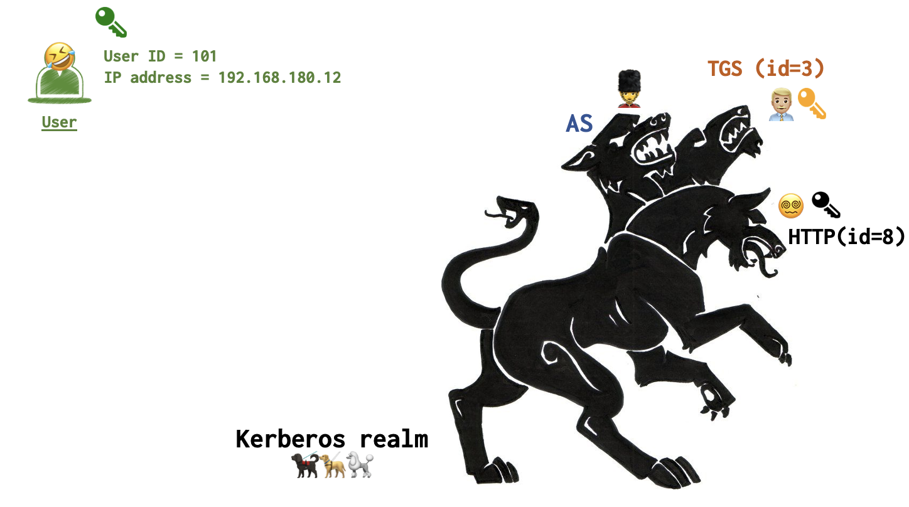
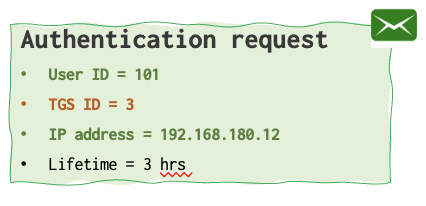
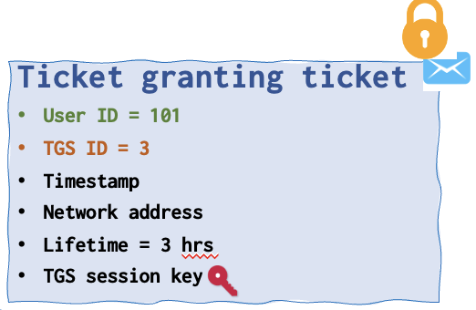
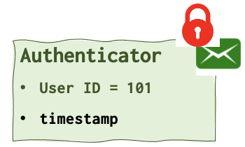
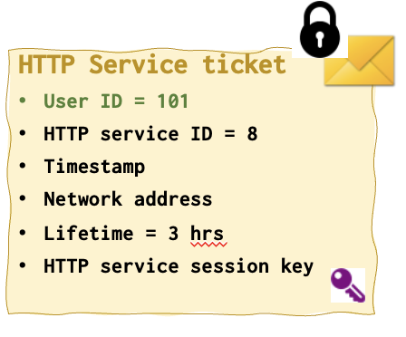
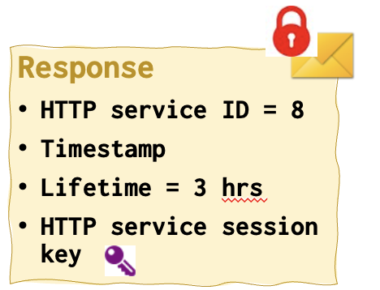
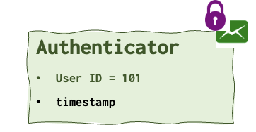
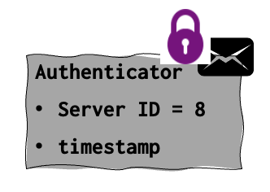
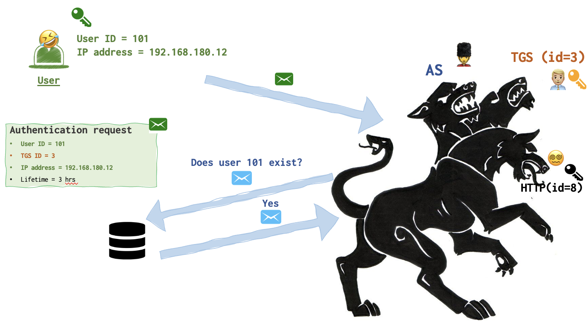

Structure
The Flow
- Wanna talk
- Ok. Let’s talk. Here is my public key. Here are the protocols that I support.
- Thanks Checks for known hosts locally. Here’s my password.
Keys
There are several keys that are used in this play. Three keys exist at the very begining. A user has his green key, TGS has its yellow one and the HTTP server has a black one. Each key is private to the party and is not know by other parties. Two more keys are generated during the authentication process: a purple and a pink one. Keys also need to be printer out: one copy for green, black and yellow keys and two copies for purple and pink ones. Here is the ininital “state”.

Messages
Below are all the messages that need to be printed. These messages are going to be exchanged and “decrypted” during the play. Each message has a symbol of envelope ✉️ at the right corner. Its color corresponds to the party’s color: user’s green, AS’s blue, TGS' yellow, HTTP server’s black. The same goes for the locks that can be drawn right upon the envelope sign. These locks mean that the message is encrypted. It’s never encrypted with the key that belongs to the author of the message, so the colors of locks and enveloped never match! For example, if the lock is yellow and the envelop is blue, it means that the message was generated by AS (since it’s blue) and encrypted with a TGS key (since the lock is yellow). To unlock the message one needs a yellow key.
All the keys that a particular party has is listed by its avatar.









The Play
When I was working in DrWeb I have designed an interactive presentation that helped to understand how Kerberos worked. My four collegues all were wearing T-shirts of different colours: green, black, blue and yellow. Luckily, these were the colours I used in my presentation as well (just a coincidence).
Each colleague was to play a ceratin role in this play: a user (green 🌱), an authentication service (blue 💦), a TGS (yellow 🌞) and an HTTP server (black 🥷). Instead of an HTTP there could be any other server, Afterall, all of these operations were designed to ensure secure authentication to some server. Could as well be an FTP or something less boring.
Each person representing a party was given an envelope colored with his color (blue, green, black or yellow), which contained appropriately colored messages and keys (yes, I’ve actually printed on the paper and cut these messages and keys).
Step 1. I wanna see the pictures of cute snakes 🐍
A user wants to connect to an HTTP server, but he cannot do so just like that. He needs to go through several levels of hell to achieve that goal and we are about to see them under the microscope.
